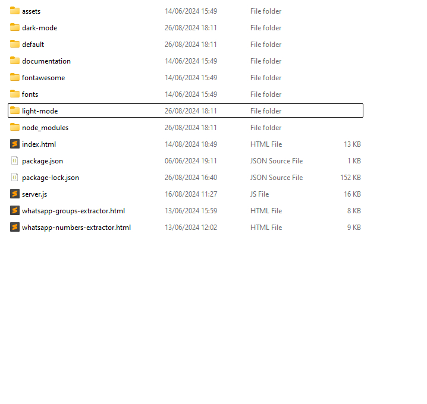
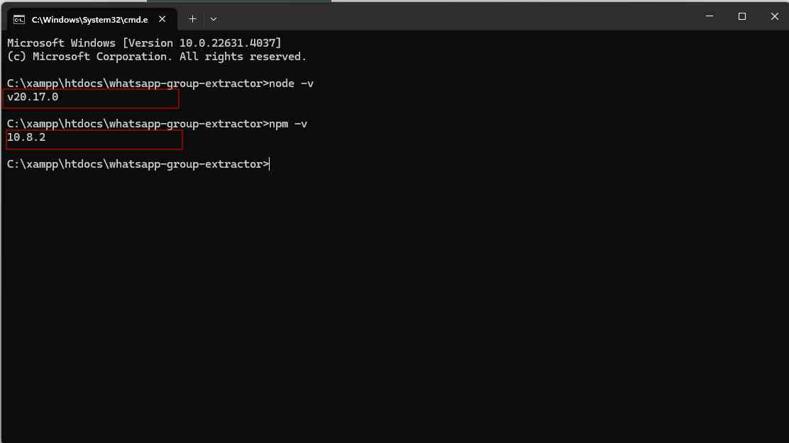
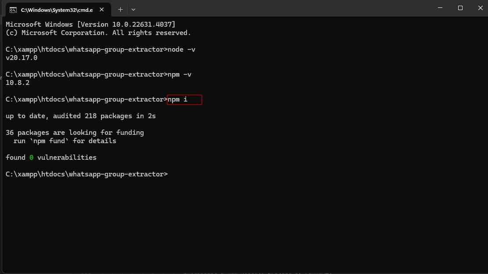
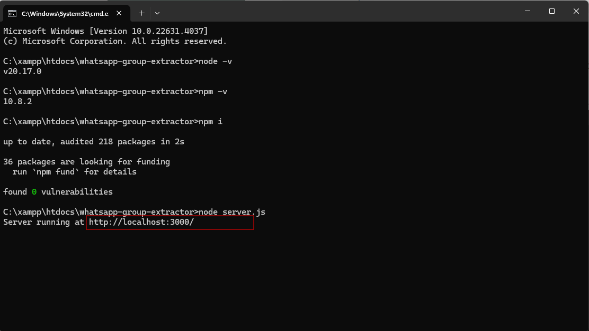
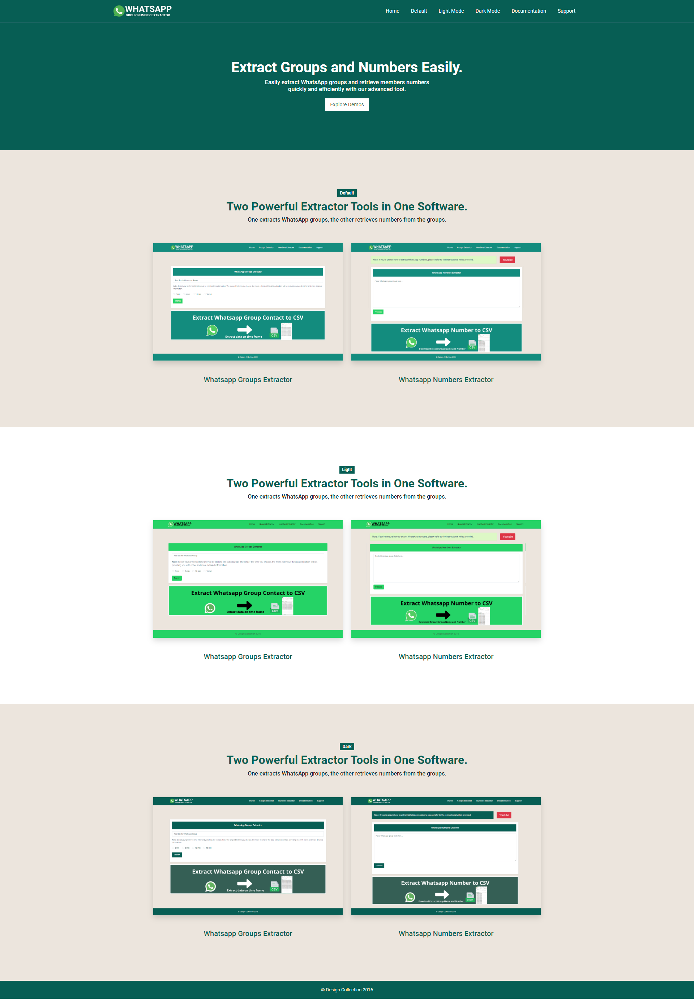
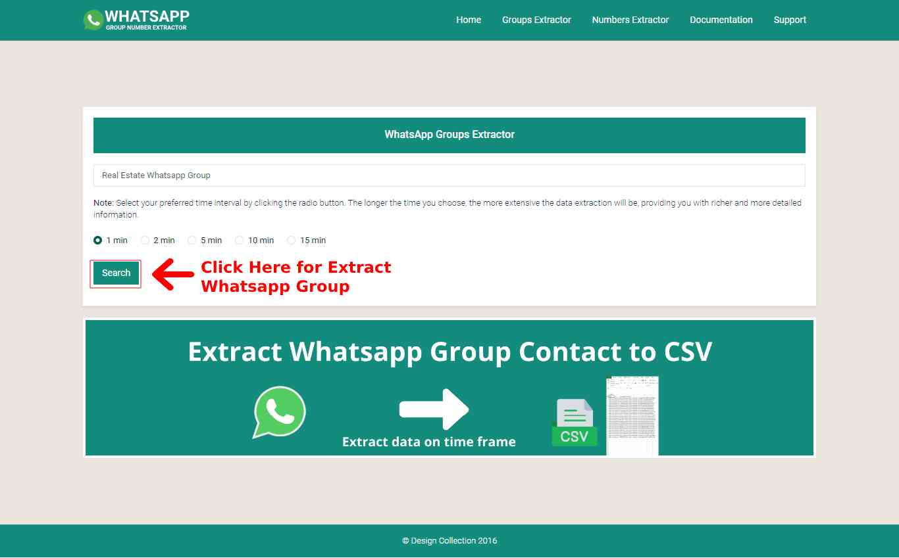
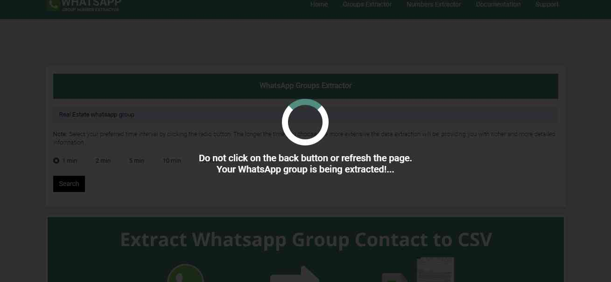
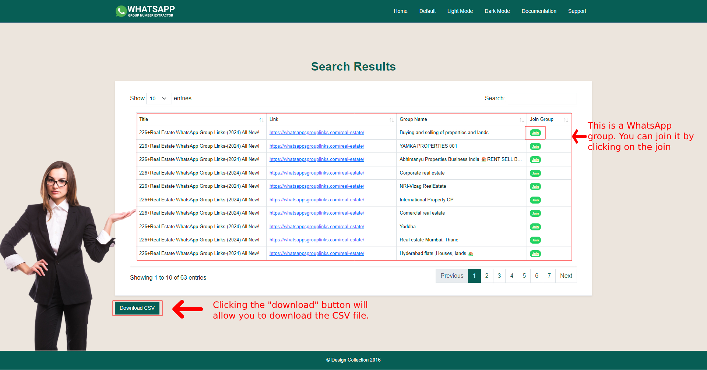
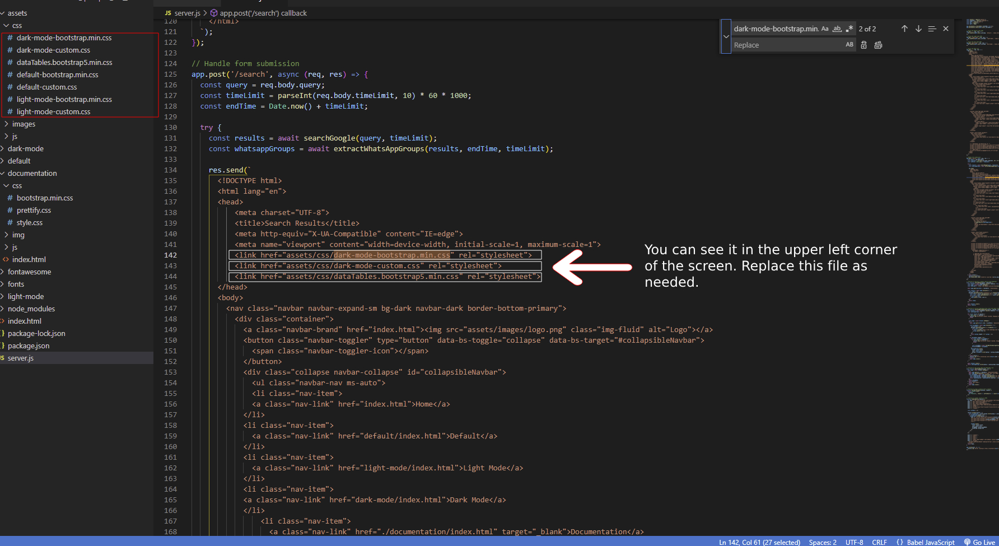

We have created 3 variations. Default, Light Mode, Dark Mode. You can choose any of the three variations.WhatsApp Group Extraction Tool, WhatsApp Number Extractor Tool have been created in all three variations.
Once the data is extracted, it is displayed in a table.
The extracted data can be downloaded in the CSV File Formate.
WhatsApp Number Extractor Tool
Extract numbers from Whatsapp group.
View extracted data in table.
Download extracted data in CSV.
Change Log
:: Version 1.0 ::
Initial Version
:: Version 2.0 ::
Bulk Number Extraction from WhatsApp Group (up to 1000)
Customizable WhatsApp Messages
Supports
Need Support?
We will be happy to talk to you, do not hesitate to mail us if there is any problem with our products or you just want to chat. You may reach us at support@designcollection.in
Support requests are being processed on business days Monday to Friday 10:30 to 18:00 (GMT +5:30) up to 2 business days.
Item support Policy:
Team-viewer, AnyDesk, Skype, Phone Calls, Signal, and Whatsapp supports are not available.
Support Via E-Mails and Support requests are being processed on business days Monday to Friday 10:30 to 18:00 (GMT +5:30) for up to 2 business days.
Support Subscription Must be active to available support.
Installation and Updation services are Not Free
after taking customization either self or from other developers then we will not able to provide support.
Offline Installation and Updation services are Not possible for us.
Source & Credits
1. We are thankful to Favicon for providing the widest range of favicon icons and with that favicon icons we could create this favicon icons.
2. We are grateful to Google Web Font for providing the widest range of font-family and with this font-family we have been able to add this "Roboto", sans-serif font-family.
3. We are thankful to Font Awesome for providing the most complete collection of free font icons, through which we have been able to include these Font Awesome icons.
4. We are grateful to freepik, storyset, pngtree for providing the broadest range of royalty-free images and with those images we were able to add this.
Note:-- Any media - Images, icons or logos used in previews are not included in this item and you need to contact authors to get permission in case you want to use them in your commercial or non-commercial projects. Read help file for more details after you purchase the product.
Folder Structure
File and Folder Structure
This is the folder structure. Inside the assets folder, there is a css folder which has all the css files, inside the images folder, there are all the images, inside the js folder, there are all the js files. Inside the dark-mode folder, there are the dark-mode pages. Inside the light-mode folder, there are the light-mode pages. Inside the default folder, there are the default pages.
Note: If you want to keep the dark-mode folder, you can keep dark-mode and remove default and light-mode.

Item support Policy:
Team-viewer, AnyDesk, Skype, Phone Calls, Signal, and Whatsapp supports are not available.
Support Via E-Mails and Support requests are being processed on business days Monday to Friday 10:30 to 18:00 (GMT +5:30) for up to 2 business days.
Support Subscription Must be active to available support.
Installation and Updation services are Not Free
after taking customization either self or from other developers then we will not able to provide support.
Offline Installation and Updation services are Not possible for us.
Requirements
Installing Node.js
To get started with Node.js, you'll first need to install it on your computer. Follow these steps to download and install Node.js:
On the homepage, you'll see Download Node.js (LTS) available for download:
LTS (Long Term Support): Recommended for most users.
Required: Node:'>=18'.
Step 2: Download Node.js
Click on the download link for the LTS version ( Lattest 20.17.0 recommended for most users). The download should start automatically.
Once the download is complete, open the installer package.
Step 3: Install Node.js
Run the installer. You will see the Node.js Setup Wizard.
Follow the on-screen instructions:
Accept the license agreement.
Choose the installation directory (the default location is usually fine).
Select the components you want to install (the default selections are recommended).
Click "Next" to proceed through the setup.
Click the "Install" button to begin the installation.
Once the installation is complete, click "Finish" to close the setup wizard.
Step 4: Restart Your PC
You need to restart your laptop or personal computer.
Step 5: Verify the Installation
Open a terminal or command prompt.
Type the following command to check if Node.js is installed correctly:
node -v
This command should display the installed version of Node.js.
To verify the installation of npm (Node Package Manager), type the following command:
npm -v
This command should display the installed version of npm.
We recommend you to install the latest version (10.8.2) of npm

Installing Dependencies with npm
Once Node.js and npm are installed, you can use npm to manage your project's dependencies. Follow these steps:
Step 1: Initialize Your Project
Open a terminal or command prompt.
Navigate to your project directory.
Initialize a new Node.js project by running:
npm i
This command creates a package.json file with default settings.

Running Your Project
Now that you have installed Node.js and npm and set up your project, it's time to run it. Follow these steps:
Open a terminal or command prompt.
Navigate to your project directory.
Run your project by executing the following command:
node server.js
This command starts your Node.js server using the server.js file.
Congratulations! You have successfully installed Node.js and npm, set up your project, installed dependencies, and run your project.

Copy and open it in your browser
Screen Look like this

We have created default, light, and dark modes. You can choose the mode that best suits your requirements.
(Dark Mode) Group Extractor
Extract WhatsApp Groups
Open whatsapp-groups-extractor.html Web Page In Your Web Browser
To extract WhatsApp groups, you need to enter specific keywords in the input box. Follow these guidelines to ensure successful extraction:
Step 1: Enter Keywords
Think of the type of WhatsApp groups you want to extract. For example:
Real Estate WhatsApp Group
Stock Market WhatsApp Group
Enter your chosen keywords in the input box. Ensure that the phrase "WhatsApp group" is included.
Step 2: Set Estimated Time Frame
Click the radio button to extract data based on the set estimated time
Estimated extraction times will be: 1 minutes, 2 minutes, 5 minutes, 10 minutes, 15 minutes.
Step 3: Run the Extraction
After entering the keywords, click on the "Search" button to start the extraction process.
The tool will search for WhatsApp groups that match your keywords and display the results in Table Formate. it will be downloaded in CSV File formate.



http://localhost:3000/search
The dark-mode css is set in dark-mode-bootstrap.min.css, dark-mode-custom.css in search page. If you want to set the default one then you can use default-bootstrap.min.css, default-custom.css. If you want light-mode css then you can set light-mode-bootstrap.min.css, light-mode-custom.css
For that you will have to open server.js file

Numbers Extractor
Open whatsapp-numbers-extractor.html Web Page In Your Web Browser
We have divided the video into two parts to show how to extract number from WhatsApp group.
How To Extract Number From Whatsapp Group upto 500?
How To Extract Number From Whatsapp Group upto 1000?